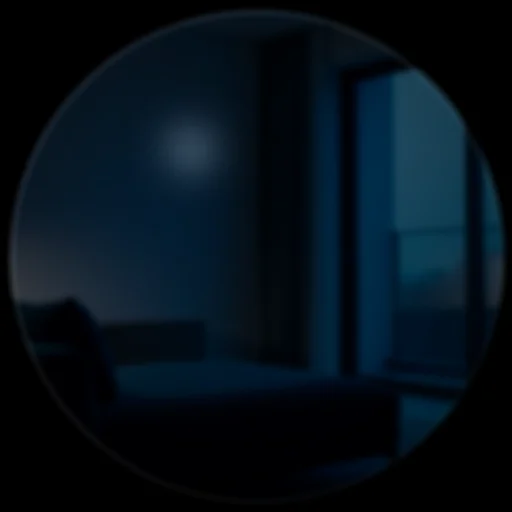
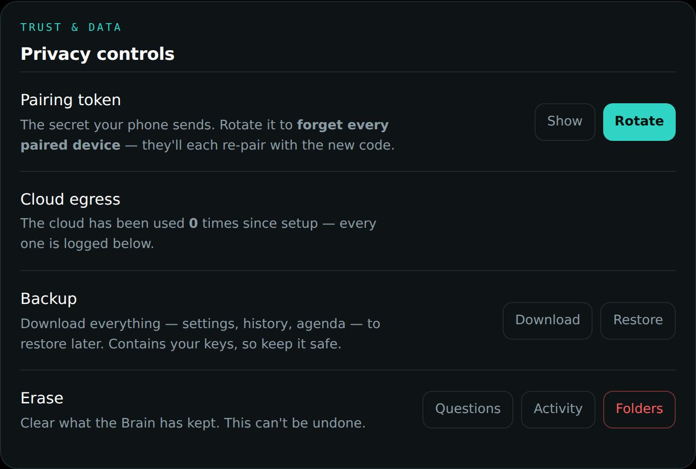

Privacy and control
Privacy is not a settings page in DreamLayer; it is the architecture. This chapter collects every control and every invariant, from the one-gesture veil to the byte-level rules about what may leave your hardware.
The Privacy Veil
One long press and the glasses go fully deaf and blind — nothing seen,
heard, or kept — until you lift it. Technically: pause() closes the
PrivacyGate, and every capture-adjacent path in the orchestrator checks
privacy.allow_capture() before doing anything.

Gated by the veil: scene and conversation ingest, live captions and the
ledger, the user model's learning, commitment capture, anticipation cards,
harks, message pop-ups, dossiers and greetings, the Social Lens ear and eye
(both identify and introduction offers), Truth Lens feeds, Veritas world
checks, answer-ahead, object look-ups, waypath, brain asks, profile
publishing, and place triggers. The Horizon keeps rendering — but only the
empty paused frame.
The veil is also honored aesthetically: the PrivacyVeilCard enters with a slam (no pane, no pretty fade), parallax freezes to zero on the exact frame the veil lands, and lifting it requires the same deliberate long press.
What the veil does not block: asking about memories that were lawfully
kept before the veil dropped (recall_conversation is user-initiated), and
resuming.
Incognito versus Focus — two different silences
| Incognito | Focus | |
|---|---|---|
| What it means | a private stretch | do-not-disturb |
| Capture | paused | keeps running |
| Cloud | forced off (preference restored after) | unchanged |
| Interruptions | (capture is off anyway) | held — cards, captions, pop-ups; urgent watch-outs still pierce |
| Set by | phone toggle, panel toggle, "Hey Juno, go incognito" | phone toggle, "Hey Juno, focus mode" (default 25 minutes) |
On the Brain, incognito maps to network_mode: "lan_only", which hard-fails
cloud_ready() — no cloud call can be assembled while it holds. Quiet hours
(below) produce the same state on a schedule.
Consent moments
- Name capture — a name is kept only from a closed, offline grammar of self-introductions ("Hi, I'm Maya" — never ambient chatter, never a bystander), saved automatically the moment it is given; the veil closes the ear, and "forget that" erases it.
- ConsentRequiredCard — a new data source stops the world until you say yes.
- Private zones — places you mark never-record; entering one shows the PrivateZoneCard.
- Forget — "forget that" erases the last capture and confirms with the ForgetLastCard.
 |
 |
 |
|---|---|---|
The three brain switches
No "mode dial" — three independent switches, exposed identically by the phone and the Mac panel:
| Switch | What it does | Default |
|---|---|---|
Mac mini (connect_mac_mini) |
upgrades the local brain to the Mac's bigger model plus your indexed files | off — the phone is the brain |
Cloud (use_cloud) |
frontier reach for the hardest, non-personal asks | on |
Incognito (set_incognito) |
forces cloud off and pauses capture for the session | off |
The rule of thumb the architecture enforces: everything that is yours — memory, people, your files, naming objects — works with cloud off. The cloud only adds reach for hard, non-personal asks, and it is never consulted for Social Lens, memory, or anything marked private, in any configuration.
Egress: counted, logged, visible
There is exactly one place data can leave your hardware — the Brain's cloud call — and it cannot happen silently:
- Every cloud answer increments a lifetime
cloud_callscounter (persisted in config, surfaced in/dreamlayer/status, shown in the panel's Privacy section and egress line). - Every call writes a
cloud-egressactivity entry with the query's first 70 characters, visible in the panel's Activity feed and the phone's Recent activity. - Answers carry their tier, so a cloud-tier answer is always attributable.

Nothing sends silently
Outbound messages (iMessage or Mail via the Brain) follow a strict draft,
approve, send flow: POST /dreamlayer/message/draft returns the exact
script for preview; POST /dreamlayer/message/send refuses anything without
approved: true, and is local-only besides. The phone's Messages tab wires
the "Approve and send" button to exactly this.
Local-only endpoints
Anything exposing secrets, the filesystem, or outbound action answers only from the machine itself (403 from off-box): the pairing token and code, the folder browser, backup and restore, clearing data, token rotation, cloud connection tests, model pulls, and message sends.
Retention, quiet hours, and the vault
- Quiet hours (
"22:00-07:00"style, wraps midnight) put the Brain into scheduled incognito — cloud off for the window. - Retention days prune the ask history and activity log on boot (0 keeps forever).
- Backup is a full restorable snapshot (config including secrets, history, activity, agenda) — local-only to download, local-only to restore. Erase clears questions, activity, or folders selectively.
- Structured memory, never raw: DreamLayer stores meaning — labels, places, lines of text, embeddings' conclusions — not audio or video recordings.
The phone's privacy surface
Every switch above, plus per-channel pop-up controls and capture pause, in one Settings group:

Deliberately not built
No stranger face lookup, no public face database, no cloning of anyone's
voice but Juno's, no covert recording. See docs/PRIVACY_MODEL.md for the
standing threat model.
The first, second and fourth are absent from the codebase, not switched off. The shipped face embedder cannot return an identity at all — with no face model present it declines every frame rather than guessing, so there is no setting that turns stranger recognition on.
The voice line needs one sentence more, because a blanket "no voice cloning"
would be false and we would rather be precise than absolute. A voice-cloning
engine (XTTS) is in the tree, behind an opt-in extra, and it exists for
exactly one purpose: so Juno can speak in her own voice offline instead of
a stock robot one. The only place the product builds it points the reference
clips at her baked juno_*.mp3 takes, hard-coded. No microphone
audio, no recording of you, and no recording of anyone near you is ever used as a
voice reference — there is no code path that would accept one. That is the
promise worth making, and it is the one the code keeps.